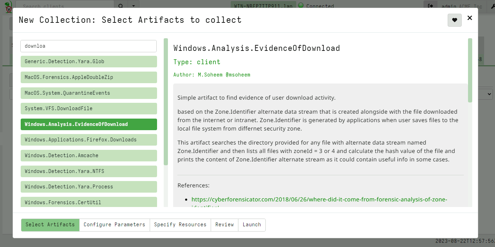
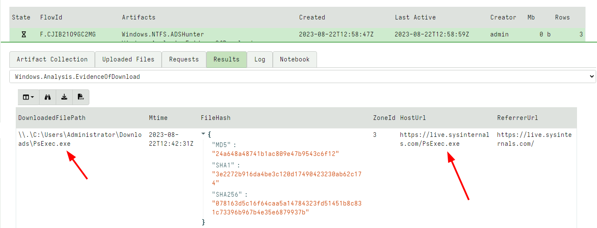
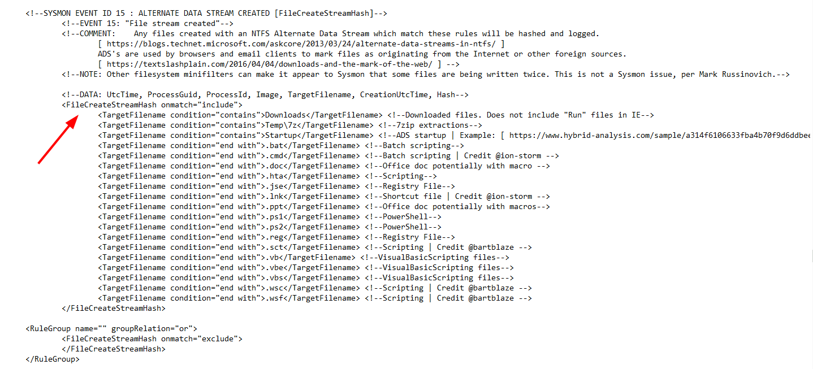
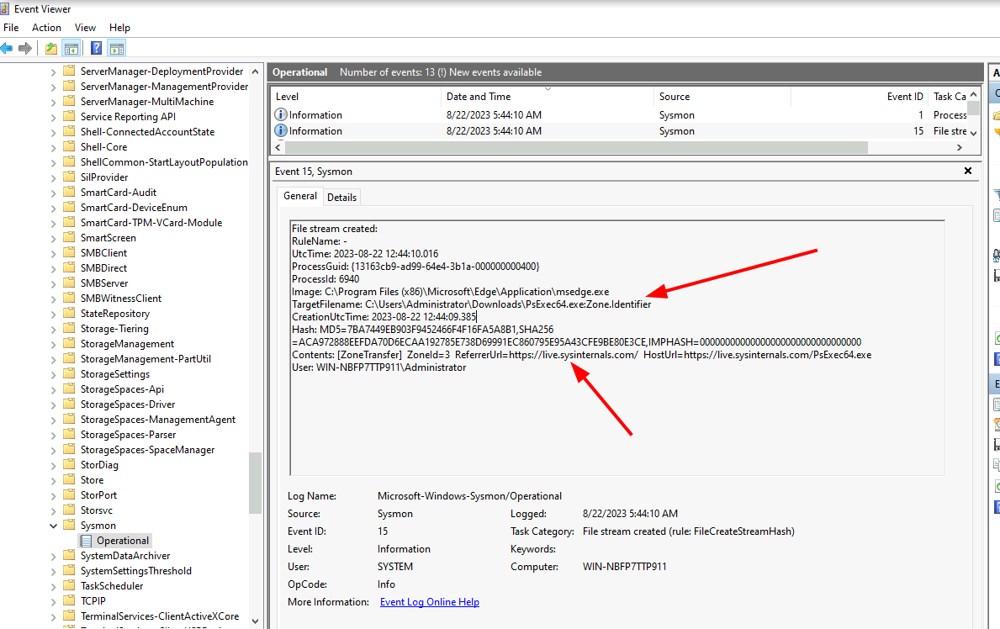
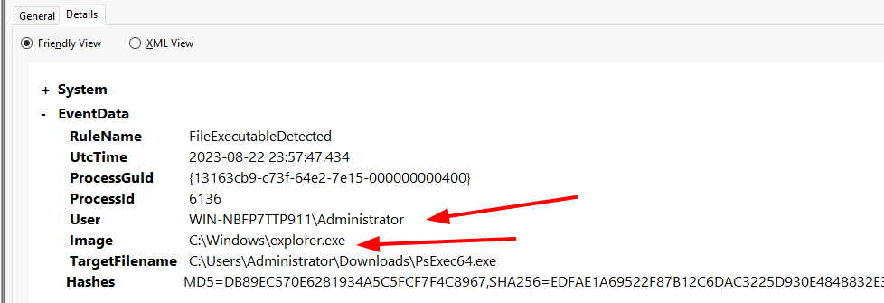

<!-- .slide: class="content" --> ## What is Sysmon? * [Sysmon](https://learn.microsoft.com/en-us/sysinternals/downloads/sysmon) is a powerful tool to monitoring system event sources * Installs a Protected Kernel Driver * Accesses many sources of telemetry * Includes an XML based rule language to allow selectively reporting and filtering events. --- <!-- .slide: class="content" --> ## Evidence of Download * Mark of the Web - An ADS added to downloaded files to indicate where they were downloaded from.  --- <!-- .slide: class="content" --> ## Evidence of Download  --- <!-- .slide: class="content" --> ## Evidence of Download: Sysmon * Sysmon can record ADS creation with Event ID 15  --- <!-- .slide: class="content" --> ## Evidence of Download: Sysmon  --- <!-- .slide: class="content" --> ## Where did this Executable come from? * Since Sysmon 15 we have a new event type for written Executables. ```xml <RuleGroup name="FileExecutableDetected " groupRelation="or"> <FileExecutableDetected onmatch="include"> <TargetFilename condition="begin with"> C:\ProgramData\ </TargetFilename> <TargetFilename condition="begin with"> C:\Users\ </TargetFilename> </FileExecutableDetected> </RuleGroup> ``` --- <!-- .slide: class="content" --> ## Where did this Executable come from? 